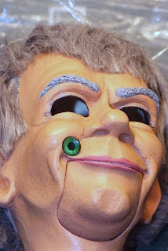

"Blinded" due to poor packaging
4/20/2009
{kind=link}

Clinton: I wish to send the head of a figure I purchased on eBay to you for repair. It was packed in abox too small and it arrived with the eyes fallen into the head, damaged in transit. Please do whatever you think necessary to make it nice. While you are at it, would you change the eyeballs to blue instead of the weird green? Also, the maker did not make the eyes self-center; please install self centering eyes. Please re-string the controls with sturdier cord; repair the cracks and repaint adding shading as needed. When you open the trap-door, if you find the door to be shabby, please hinge and latch it properly. Please revise the internal eye shelf as you see fit. I like the wig. Roland
* * * * * *
Roland: From the photos you sent I don't think the repair of the eBay dummy will be major. And I agree, the damage was done during shipping transit. Shipper's handling is not always gentle, and we know that. Thus, it is the responsibility of the shipper to pack items well enough to safely travel through the system. (I've watched clerks toss boxes into bins, so with that picture in my mind, my products are packed well protected to endure such handling, and I've not had a problem.) Changing the color of the eyes is not easy. I'll address that issue after I see the figure. I'm going to guess we'll need to replace the eyes with new mounts.